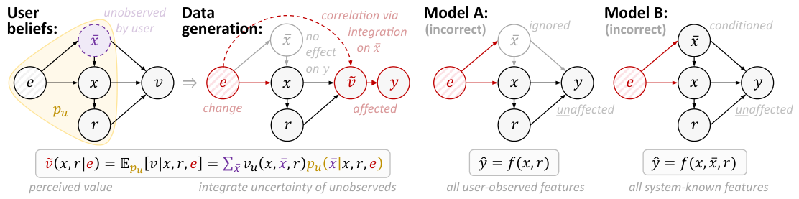
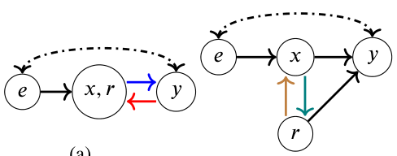

In the Eye of the Beholder: Robust Prediction with Causal User Modeling（观者眼中：因果用户建模的鲁棒预测）
- 会议/期刊: NeurIPS 2022
- 作者与机构: Amir Feder (Columbia University)、Guy Horowitz、Yoav Wald、Roi Reichart、Nir Rosenfeld (Technion / JHU)
- 推荐链路定位: 精排/相关性预估（二分类，不是排序实验）
- 研究方向: 去偏公平、可信隐私与工业架构（Causal Rec / OOD 鲁棒）
- 论文原文: https://arxiv.org/abs/2206.00416v2
- 开源代码: 暂未开源
TL;DR (1分钟核心速览)
针对推荐系统新内容与时尚趋势导致日志分布漂移、ERM 易学虚假相关的问题，本文把用户视为凭因果信念做选择的有限理性决策者，用因果/反因果图类决定边际或条件 MMD 正则，并按相信者/怀疑者分组建模。RecBeer 按年预测、RecFashion 相关性偏移及合成 OOD 实验中，匹配用户类型的正则化保持稳定；合成 skeptic OOD 50.0→75.6、believer 75.1→85.2。
Background & Motivation (背景与核心矛盾)
- 主流范式: 在日志数据 \((u,x,r,y)\)上训练相关性预测器\(f_u(x,r)\)，以 ERM 拟合历史选择；环境\(e\)（时间、风尚、供给）变化后，测试分布随之漂移。
- 前人局限: ① ERM 会利用训练环境中 \(x/r\)与\(y\)的虚假相关，环境一变即失效；② 若把系统可见但用户不可见的\(\bar{x}\)也喂给模型，模型又会过拟合\(\bar{x}\) 的实例，而非学习用户真实的稳定偏好。
- 核心洞察 (Key Insight): 用户并不观测 \(\bar{x}\)，但知道其缺失，并以依赖\(e\)的信念\(p_u(\bar{x}|x,r,e)\)对未观测价值积分；这一步会在数据中制造\(e\to y\) 的相关性。用户本身就是因果机制，不存在唯一“真实因果图”，一切取决于用户如何感知。
- 本文切入点: 用个性化因果图 \(G_u\) 编码用户信念，再仅依据图类（因果/反因果）与子类（相信者/怀疑者）选择不变正则，无需推断完整图。

Method (核心方法设计)
1. 整体框架 (Overall Architecture)
输入用户 \(u\)、物品属性\(x\)、平台信息\(r\)与环境\(e\)；用户按有界理性信念对未观测\(\bar{x}\)积分，形成感知价值并作出选择\(y\)。学习端不直接拟合\(\bar{x}\)，而是按用户因果图类型施加 MMD/CORAL 正则，迫使预测\(\hat{y}\)对环境\(e\)不变；若用户子类不同，则按子类分组训练独立预测器，最终以\(f_u(x,r)\) 输出相关性。
flowchart TD
A["用户u/物品x/平台r/环境e"] --> B["有界理性感知：对未观测x̄按p_u积分"]
B --> C["选择y=1[ṽ>0]；用户因果图G_u"]
C --> D["按因果/反因果选边际或条件MMD"]
D --> E["按相信者/怀疑者分组训练f_u(x,r)"]
E --> F["输出相关性预测ŷ"]2. 关键设计拆解 (Key Designs)
-
有界理性用户与虚假相关生成：经典 EUT 假设全信息，但用户实际只知道 \(x,r\)，不知道\(\bar{x}\)。其感知价值为
\(\tilde{v}_u(x,r|e)=\sum_{\bar{x}}v_u(x,\bar{x},r)p_u(\bar{x}|x,r,e),\quad y=\mathbb{I}[\tilde{v}_u(x,r|e)>0]\)。
\(p_u(\cdot|e)\)使\(e\)通过“对不确定性的积分”进入\(y\)；因此\(f_u(x,r)\)可能用\(x,r\)补偿训练环境的残余效应，\(f_u(x,\bar{x},r)\)又会过拟合\(\bar{x}\)。这解释了“用户选择本身即可制造虚假相关”。 -
因果/反因果图类决定正则形式：因果用户认为 \(x,r\to y\)，需边际不变；反因果用户认为\(x,r\leftarrow y\)，需在给定\(y\) 下条件不变。于是
\(R(f;S)=\sum_k\mathrm{MMD}(\Phi_{k,u},\Phi_{-k,u})\)（因果，边际 MMD）；
\(R=\sum_y\sum_k\mathrm{MMD}(\Phi^{(y)}_{k,u},\Phi^{(y)}_{-k,u})\)（反因果，条件 MMD）。
关键结论是：只需知道用户属于两类中的哪一类，无需完整图，即可选对正则；多用户同类的样本应共享同一正则方式。

- 相信者/怀疑者与训练目标：即使两个用户 ID 最优预测器相同，只要 \(x,r\)的因果方向不同（believer:\(x\to r\)；skeptic:\(x\leftarrow r\)），其最优 CI 预测器也可能不同。故应按子类分组训练：
\(\arg\min_{f\in F} L(f;S)+\lambda R(f;S_1,\dots,S_K)\)。
训练用 MMD/CORAL 正则，\(\lambda>0\)；不涉及负采样（二分类相关性预测），推理仅需\(f_u(x,r)\) 加用户类型路由，开销与基模型同阶。
Experimental Setup & Evaluation Protocol (实验设置与评估协议)
-
数据集与预处理: 未采用
5-core；RateBeer 保留约 10 年评论，Fashion 使用 44.4k 商品图像/属性/文本，合成数据为 3 个二值特征。
| 数据集 | #Users | #Items | #Interactions | 稀疏度/密度 | 特征/场景说明 | | :--- | :---: | :---: | :---: | :---: | :--- | | RateBeer | 未披露 | 未披露 | ~3M reviews | — | 啤酒类型风尚随年份 \(e\) 变化 | | Fashion | 未披露 | 44.4k | 未披露 | — | 图像灰度 \(x\)、颜色\(r\)、选择\(y\) | | Synthetic | 未披露 | 3 个二值特征 | 未披露 | — | \(e_1,e_2\)训练，\(e_3\) 测试 | -
数据划分与防穿越: RateBeer 按年份做时间外推：用过去数据训练、预测下一年；Fashion 训练相关性 \(p_e'\in[0.1,0.8]\)、测试固定\(p_e=0.8\)，考察训练-测试相关性偏离与翻转；合成实验用\(e_1,e_2\)训练、\(e_3\) 测试，属 OOD 划分。
- 排名评测协议: 不是 Full-Ranking，也不是 Sampled Ranking；本文任务是二分类相关性/选择预测，报告 Accuracy，无候选集构造与负采样。
- 对比基线与超参设置: 主要对比 causal / anti-causal / non-causal 三种正则方案，以及按子类分组 vs 池化训练；正则用 MMD 或 CORAL，\(\lambda>0\)；正文未给统一 embedding 维度，未报告\(p\) 值显著性检验。
Key Experimental Results (实验关键数据)
1. 主实验对比 (Main Results)
原文 Fig.3/Fig.4 以曲线呈现，未给统一主表数值；下表按原文结论归纳，避免新造数字。
| 训练方案 | RecBeer：啤酒风尚漂移 | RecFashion：训练-测试相关性偏离 | RecFashion：相关性翻转 \(<0.5\) | 合成 OOD 参考 |
|---|---|---|---|---|
| 因果正则（匹配 causal） | 稳定，显著优于另两者 | 非一致类型，偏离时不稳定 | 崩溃 | — |
| 反因果正则（匹配 anti-causal） | 崩溃 | 稳定，优于另两者 | 保持鲁棒 | 用于 anti-causal 合成 |
| 非因果/ERM | 漂移时崩溃 | 偏离时退化 | 崩溃 | \(\lambda=0\)：skeptic 50.0 / believer 75.1 |
| 按子类分组（Prop.2） | — | — | — | skeptic 75.6 / believer 85.2 |
| 池化训练 | — | — | — | skeptic 64.57 / believer 78.13 |
2. 消融实验 (Ablation Study)
| 正则 | 训练用户 | 测试 skeptic ID/OOD | 测试 believer ID/OOD |
|---|---|---|---|
| \(\lambda=0\) | skeptic / believer / both | 78.0 / 50.0 | 89.8 / 75.1 |
| \(\lambda>0\) | skeptic | 71.1 / 75.6 | 74.67 / 75.5 |
| \(\lambda>0\) | believer | 69.8 / 52.5 | 88.5 / 85.2 |
| \(\lambda>0\) | both | 70.03 / 64.57 | 78.88 / 78.13 |
相对 \(\lambda=0\) 池化 OOD：skeptic +51.2%，believer +13.5%；分组训练同时基本保持 ID 精度。
3. 关键实验发现 (Key Findings)
- 正则必须与用户因果类一致：RecBeer 中 causal 正则在啤酒类型风尚显著变化时保持稳定，而 anti-causal/非因果方案崩溃；2006/2008 年 causal 非最优，是因为训练-测试相关性被刻意设得相近。
- 反因果场景同样成立：RecFashion 中 anti-causal 正则在训练-测试相关性偏离时优于另两者；一旦相关性翻转（\(<0.5\)），causal 与 ERM 崩溃，anti-causal 仍鲁棒。
- 子类分组比池化更稳：合成实验 \(\lambda=0\) 时 skeptic OOD 仅 50.0；按 skeptic/believer 分别训练后升至 75.6/85.2，而池化仅 64.57/78.13；即使 25% 子群混合噪声，分组模型仍优于池化。
Highlights & Limitations (亮点、对比与审稿批判)
- 与代表作对比 (vs. Prior Work): 既往因果推荐多处理曝光/选择偏差或系统对用户的影响；本文首次把“用户对推荐生成过程的因果误解”作为数据生成机制。与 Veitch et al. 的不变学习相比，本文证明无需完整因果图，只需因果/反因果类；与 Spiegler 的因果主观模型相比，本文将其落到可训练的推荐正则。
- 可迁移亮点: ① 用环境标签 \(e\) 做表示层 MMD/CORAL 正则，可直接迁移到跨时间/跨场景推荐；② 按可推断的用户因果类型分组训练，比单一池化模型更适合异质用户。
- 审稿级局限批判: ① 真实数据实验仍属半合成：RateBeer 的 causal 标签通过反事实干预空间模拟，Fashion 的 anti-causal 数据也是生成式构造，缺少真实线上 A/B；② 依赖用户类别/子类先验或推断，且正文未报告显著性检验与统一数值表，工程部署需额外解决用户类型漂移与冷启动路由。
Rating (四维评分)
- 方法创新性 (Novelty): ⭐⭐⭐⭐ （把用户因果感知当作数据生成机制，并提出“只需图类即可选正则”的命题，概念新颖）
- 评估协议与实验扎实度 (Protocol & Experiments): ⭐⭐⭐ （时间外推与相关性翻转设计有针对性，但真实数据半合成、无全库排序/显著性检验）
- 写作与数学规范度 (Clarity & Rigor): ⭐⭐⭐⭐ （定义、命题与正则推导清晰，附录含证明；部分实验细节留附录）
- 工业落地与复现价值 (Industrial & Practical Value): ⭐⭐⭐ （正则轻量、易挂载现有精排模型，但用户类型知识难得，且暂未开源）